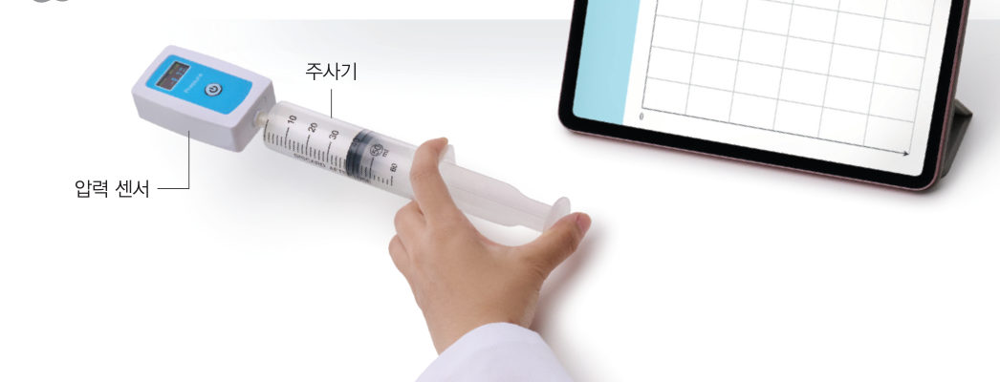
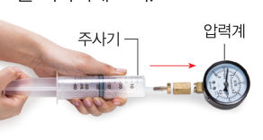
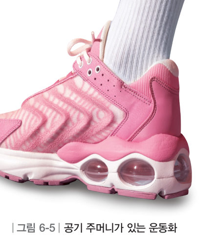
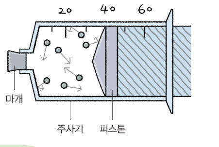
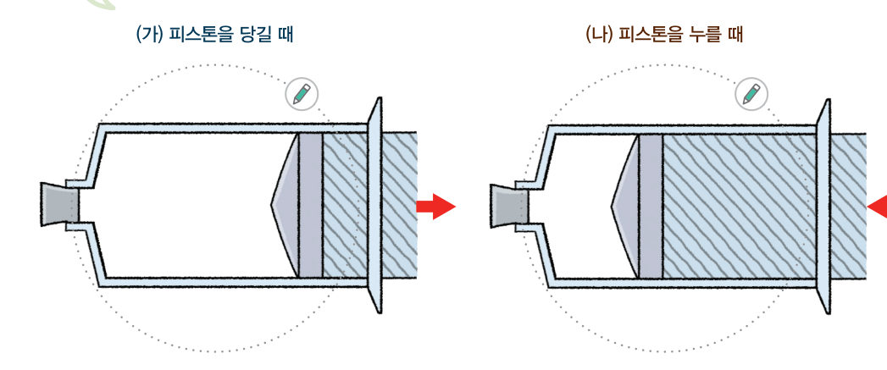
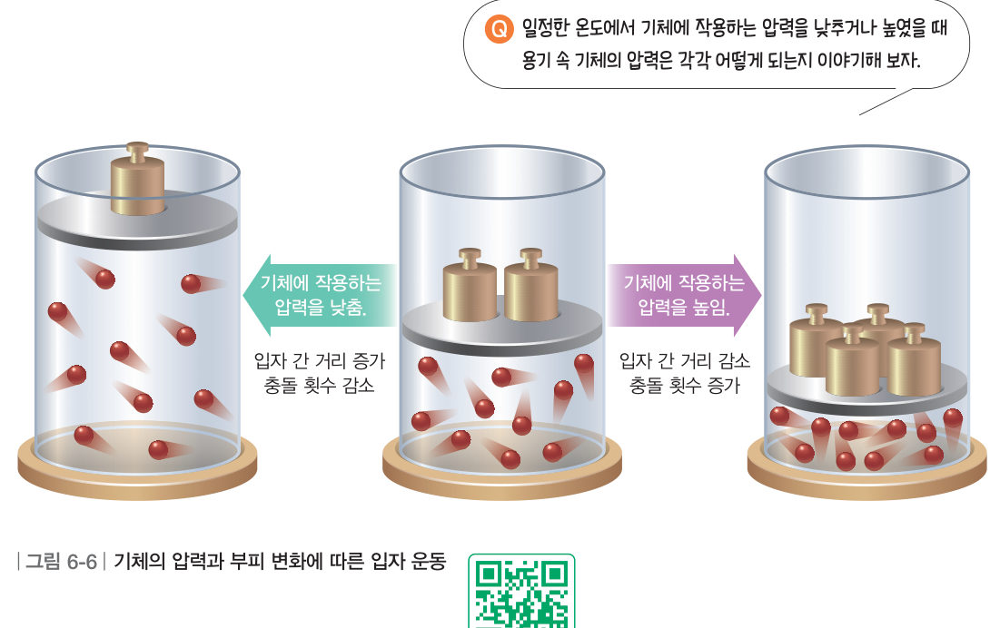
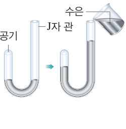

살아있는 교과서 · Ⅵ. 기체의 성질 · 2. 기체의 압력 및 온도와 부피 관계 · 01 205~209쪽
기체의 압력과 부피 관계
“어, 너 몸이 부풀었어.” “몰라. 과자 양은 변함없는데 몸만 커졌어.” 하늘 높이 떠 있는 비행기 안의 과자 봉지는 왜 부풀었을까? 가상 주사기와 압력 센서로 압력과 부피를 측정하고, 입자 모형으로 그 까닭을 설명해 보자.
🎯 이 단원을 배우면 — 기체의 압력과 부피 관계를 실험으로 알아내고, 입자 운동으로 설명할 수 있다.
단원 열기2. 기체의 압력 및 온도와 부피 관계 205쪽
물 뿜는 인형에서 물이 뿜어져 나오려면 먼저 물을 넣어야 해. 그런데 인형에 물을 넣기가 어려워 보여.
두 번째 블록
물 뿜는 인형에서 물은 어떻게 들어갔다가 나오는 걸까?
‘기체의 압력과 부피 관계’(206쪽), ‘기체의 온도와 부피 관계’(210쪽), ‘기체의 부피 변화 예 조사하기’(214쪽)의 블록을 모으면 답할 수 있어요. 🧩
탐구기체의 압력과 부피 관계를 실험으로 알아보기 206~207쪽
기체의 압력과 부피는 어떤 관계일까?
비행기가 하늘 높이 올라가면 비행기 안에 있던 과자 봉지가 팽팽하게 부푼 것을 볼 수 있다. 이것은 비행기의 높이에 따른 압력 변화가 과자 봉지 속 기체의 부피에 영향을 미치기 때문이다.

206쪽주사기 · 압력 센서 · 스마트 기기
준비물 60 mL 주사기, 압력 센서, 스마트 기기, 실험복
주사기 속 공기의 부피가 40 mL가 되도록 피스톤의 눈금을 맞춘 다음, 주사기와 압력 센서를 연결한다.
디지털 탐구 도구 활용 기체 압력 측정 앱을 실행하고 압력 센서와 스마트 기기를 연결한다.
측정 피스톤을 서서히 누르면서 주사기 속 공기의 부피와 압력을 측정하고 5 개의 값을 표에 기록한다.
자료 수집 · 변환 가로축은 공기의 압력, 세로축은 공기의 부피로 하여 그래프로 나타낸다.
가상 실험가상 주사기와 압력 센서
슬라이더로 피스톤을 누르거나 당겨 보자. 주사기 입구는 압력 센서에 막혀 있어서 공기 입자 수는 그대로예요. 원하는 부피에서 [측정값 기록]을 눌러 5 개 이상 기록하면 그래프가 그려져요. (●기압: 기체의 압력을 나타내는 단위)
압력 센서 앱
1정리해 볼까 피스톤을 누르면 주사기 속 공기의 부피는 , 공기의 압력은 .
2부피가 40 mL일 때 1.0 기압이었다면, 피스톤을 눌러 20 mL로 만들었을 때 압력은 약 기압이다. 기록표에서 (압력 × 부피)의 값은 .
3결과 해석 및 결론 도출 실험 결과를 바탕으로 기체의 압력과 부피 관계를 이야기해 보자.
다르게 해 보기 · 압력계를 이용해 주사기 속 공기의 압력과 부피 측정하기

주사기와 압력계
① 압력계에 주사기를 연결한다. ② 피스톤을 누르면서 주사기 속 공기의 부피와 압력을 측정한다. ③ 측정한 값을 이용하여 압력–부피 그래프를 그린다. 정리 기체의 압력과 부피 관계를 이야기해 보자.
207쪽스프레드시트를 공유하여 각 모둠의 측정 결과를 하나의 표에 입력한다.
교과서피스톤을 누르거나 당기면 207~208쪽
기체가 들어 있는 주사기의 피스톤을 누르거나 당기면 주사기 속 기체의 압력과 부피가 달라진다. 일정한 온도에서 피스톤을 눌러 일정한 양의 기체에 작용하는 압력을 높이면 기체의 부피가 줄어들고 기체의 압력이 커진다. 반대로 피스톤을 당겨 기체에 작용하는 압력을 낮추면 기체의 부피가 늘어나고 기체의 압력이 작아진다.
기체의 압력과 부피 관계는 그림 6-5와 같이 바닥에 공기 주머니가 있는 운동화에서도 볼 수 있다. 운동화를 신고 걸으면 바닥에 발이 닿는 순간 몸무게 때문에 공기 주머니에 작용하는 압력이 커져 공기 주머니의 부피가 줄어들고 주머니 속 공기의 압력이 커진다.

그림 6-5공기 주머니가 있는 운동화
더 알아보기 · 기체의 압력과 부피 관계를 알아낸 보일 보일(Boyle, R., 1627~1691)은 실험과 관찰의 중요성을 강조하고 화학의 기틀을 마련한 과학자이다. 공기 펌프를 개발해 다양한 실험을 하였고, 1662 년에는 J자 관을 이용해 기체의 압력과 부피 관계를 연구하여 그 결과를 발표했다.
해 보기기체의 압력과 부피 관계를 입자 모형으로 알아보기 208쪽

일정한 온도에서 주사기 속 공기의 입자 모형
고려할 점 — 입자의 개수는 어떻게 될까? 입자 사이의 거리는 어떻게 될까? 입자가 주사기 벽에 충돌하는 횟수는 어떻게 될까? 아래 두 주사기에서 (가) 피스톤을 당기고, (나) 피스톤을 눌러 보며 입자 모형을 관찰하자.

208쪽(가) 피스톤을 당길 때 · (나) 피스톤을 누를 때 — 입자 모형을 그려 넣는 활동
(가) 피스톤을 당길 때
(나) 피스톤을 누를 때
입자의 개수
입자 사이의 거리
벽에 충돌하는 횟수
✔표를 다 채웠으면 [확인하기]로 확인해 보자. 그리고 기체의 압력과 부피 관계를 입자 모형으로 이야기해 보자.
교과서압력과 부피 관계를 입자 운동으로 설명하기 209쪽
기체의 압력과 부피 관계는 입자 운동으로 설명할 수 있다. 일정한 온도에서 용기에 들어 있는 일정한 양의 기체에 작용하는 압력을 낮추면 그림 6-6과 같이 입자 수는 변하지 않지만 용기 속 기체의 부피는 늘어난다. 따라서 입자 사이의 거리가 멀어지고 입자들이 용기 벽에 더 적게 충돌하므로 용기 속 기체의 압력이 작아진다. 반대로 기체에 작용하는 압력을 높이면 입자 수는 변하지 않지만 용기 속 기체의 부피는 줄어든다. 따라서 입자 사이의 거리가 가까워지고 입자들이 용기 벽에 더 많이 충돌하므로 용기 속 기체의 압력이 커진다. 이와 같이 온도가 일정할 때 기체에 작용하는 압력이 변하면 기체의 부피는 기체에 작용하는 압력과 용기 속 기체의 압력이 같아질 때까지 늘어나거나 줄어든다.

그림 6-6기체의 압력과 부피 변화에 따른 입자 운동
가상 실험움직이는 그림 6-6 — 피스톤 위에 추 올리기
추를 올리거나 내려 보자. 피스톤은 기체에 작용하는 압력(추 + 바깥 공기)과 용기 속 기체의 압력(입자의 충돌)이 같아지는 곳에서 멈춰요.
오개념 바로잡기 · 기체에 작용하는 압력이 변하면 입자의 운동성이 변할까? 일정한 양의 기체에 작용하는 압력이 변하면 입자의 충돌 횟수는 변하지만, 입자의 운동성은 변하지 않는다. 기체 입자의 운동성은 온도에 따라 달라지는 것이므로, 기체의 온도가 변해야 입자의 운동성이 변한다.
1추를 더 올리면 입자의 빠르기(운동성)는 .
스스로 확인하기206쪽 학습 목표를 달성했는지 확인해 보자 209쪽
1개념 확인 일정한 온도에서 일정한 양의 기체에 작용하는 압력을 낮추면 기체의 부피가 늘어나고 기체의 압력이 ( ).

J자 관
2사고력 보일은 한쪽이 막힌 J자 관에 수은을 넣을수록 관 속 공기의 부피가 줄어드는 것을 확인했다. 관 속 공기의 압력과 부피 관계를 입자 운동으로 설명해 보자.
5분 테스트기체의 압력과 부피 관계
1압력계가 연결된 주사기에서 피스톤을 눌러 기체에 작용하는 압력을 높이면 부피가 . 피스톤을 당겨 부피가 늘어나면 입자 사이의 거리가 . 피스톤을 눌러 입자 사이의 거리가 가까워지면 기체 입자가 용기 벽에 충돌하는 횟수가 .
2피스톤 위에 추를 올리거나 빼는 실험(그림 6-6)에 대해 옳으면 O, 옳지 않으면 X를 골라 보자.
④ 일정한 온도에서 일정한 양의 기체에 작용하는 압력을 낮추면 기체의 부피가 늘어난다.
⑤ 피스톤에 올려놓은 추를 빼면 기체 입자 수는 감소한다.
⑥ 피스톤에 추를 올려놓으면 기체 입자 사이의 거리가 가까워져 충돌 횟수가 증가한다.
⑦ 피스톤에 추를 올려놓으면 기체 입자가 움직일 수 있는 공간이 넓어져 기체의 압력이 작아진다.
가상 실험감압 용기 속 과자 봉지
감압 용기의 펌프로 공기를 빼 보자. 용기 속 공기의 압력이 낮아지면 과자 봉지는 어떻게 될까?
3감압 용기의 공기를 빼면 감압 용기 속 압력이 . 이때 과자 봉지 속에 들어 있는 기체 입자의 충돌 횟수가 . 과자 봉지를 들고 높은 산에 올라가면 과자 봉지 속 기체의 압력이 .
스스로 정리하기온도가 일정할 때 기체의 압력과 부피 관계 216쪽
1온도가 일정할 때 기체의 압력과 부피 관계
(1) 기체에 작용하는 압력을 낮추면 기체의 부피가 , 기체의 압력이 . (2) 기체에 작용하는 압력을 높이면 기체의 부피가 , 기체의 압력이 .
제출학생 정보 · 제출하기
모든 활동을 마친 뒤 제출하면 전체가 한 번에 채점되고 피드백이 나타나요. 답안은 선생님 스프레드시트(중1 탭)에 기록돼요.